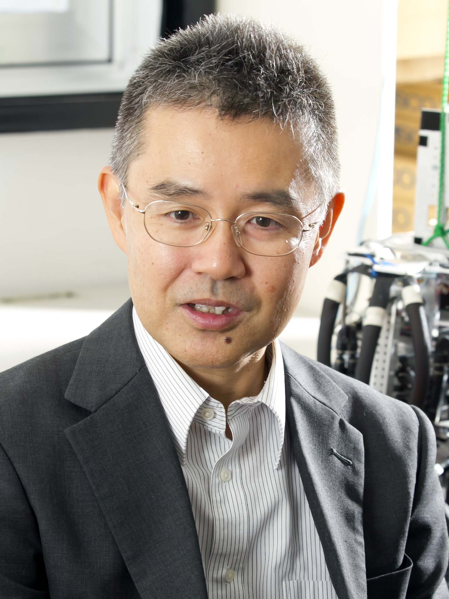

Frame of Referenceにようこそ
Frame of Reference とは参照座標のこと，ある単一の事象でもそれを見る 立場(参照座標)が変わると，その意味は大きく変わるという，知能エージェントを構成する際に解かねばならない問題です． 振り返って日常生活でも，単一事象でも立場を変えるとさまざまな見方をすることができます． 仮想的にさまざまなスタンスを取れるのが大切だと思うのですが，世の中，私を含めて特定のスタンスにこだわってしまう，あるいは別のスタンスからの見方ができない人があまりに多いと思いませんか？
June 10, 2023
AMAM2023無事に終了しました． この国際シンポジウムは，研究の仲間で繋ぎ，運営していて，一切の政治がなく，どこの学会の後ろ盾もない，真の意味でのわれわれのシンポジウムです． 昨日終わってぼっと考えていたら，そういえばもうこの会議の運営に関わることもないのかと気が付いてちょっと感傷に浸ってしまいました． 恐らく，私と石黒章夫先生（東北大）だけがこのシンポジウムに皆勤なので，記憶にとどめるためにも過去のシンポジウムについても書き残しておこうかと思います．
そもそもこのシンポジウムは，当時電気通信大学の木村浩先生が2000年にモントリオールのマックギール大学で開催したのが第1回でした．共同開催者がMartin Buehler，当時はマックギール大学にいて，その後，ボストンダイナミクス この第1回がひどくて，別の国際シンポジウムと共同で開催していたのですが，学会事務が金を持ち逃げするという事件が起き，バンケットもなく，当初行われるはずだったところとは違う会場で行われるなど，なかなかに波乱の始まりでした． 私は当時，視覚を使った反射的な歩行創発の研究をしていて，木村先生に誘われてこの会議に参加しました．どういう偶然かわかりませんが，会場にいた石黒章夫先生（当時名古屋大学），Auke Ijspeert（当時UCLAのポスドク）と飲みに行ってすっかり意気投合しました． まだ30代で，通りで散々飲んだくれて，そのあと朝6時までディスコ，あくる日のセッションには朝一から平然と出るというむちゃぶりでした．
第2回は2003年3月に京都で，特定領域研究「移動知」がホストとなって行われました．私はサイトビジットの担当で，ATRにバスを仕立てて見学を計画したのを覚えています． 今は受動歩行で有名なMartijn Wisse（当時は博士学生）が受動歩行ロボットMikeを持ってきて（このあたりの顛末は過去の日記にもあります），PhDコミックで有名なJorge ChamがSprawlというゴキブリロボットとデモをしていました（動画が残っています）． 第3回は2005年ドイツ・イルミナウ，第4回は2008年クリーブランドでした．クリーブランドでは，今回全体講演を引き受けてくれたMirko Kovacがバッタのロボットを発表していました．
第5回は日本開催が決まっていたのですが，ここでこのシンポジウムをしきっていた木村先生が御病気になり，開催が宙ぶらりんになります． このままAMAMは自然消滅するかというところまで行ったのですが，私と石黒先生，大阪大学の杉本先生が何かの学会での立ち話を通じて，なんとか継続しようと画策を始め，大阪大学の大須賀先生に実行委員長をお願いして，2011年に淡路島で無事，開催することができました． 第5回には，第6回の実行委員長をお願いするべく，TU DarmstadtのAndre Sayfarth先生をお呼びし，Hertmut Geyerも来日しました． Alex SprowitzがCheetah Cubを持ってきてデモをしてくれたのを覚えています．Martin Fisher先生やRolf Pfeifer先生が全体講演をしました．
自然消滅を避けるために，次回の実行委員長を招待するという作戦が功を奏し，第6回は無事に2013年3月，雪の降るドイツ・ダルムシュタットで開催されます． これ以降，私は個人的にダルムシュタット工科大学とのつながりが強くなったのですが，それはおいておいて． 第6回には，当時ロンドンの王立獣医学校にいたMonica Deley先生が初めて参加します．Monicaは，Alexと共同で，Cassieの前身になったAtlasというロボットの設計，制御にかかわっていた先生です． 私と一緒にTandem talkをしたのでよく覚えています．第7回は，MITに移ったSangbae Kim先生が実行委員長で，彼の都合（プロジェクトの年度進行上）で2015年6月にボストンで行われました（それまでは1.5年周期が原則だった）． MIT Cheetahの現場デモが強烈な迫力で，やっぱり馬力が違うな，と思った一方，毎晩のようにエールビールを呑んだくれていました．
第7回はみたび日本に戻ってきます．満を持して石黒先生が実行委員長，東北大の石黒軍団と当時北大の青沼先生の現地委員というタッグで，盛況でした． このとき，Emily Standen先生が初参加で，それ以後，石黒先生，Emily，Aukeは緊密な共同研究を始めます． 私はプログラム委員長で，プログラム編成やポスターのハンドリングをしていました．
第8回，ヨーロッパ開催は，こちらも満を持してAukeが実行委員長．バンケットはレマン湖のクルーズ船で行われるなど，これまでのAMAMでももっともにぎやかに開催されました． 神経科学の研究者も参加し，コミュニティはさらに拡大するかと思われました．しかし，第9回2021年カナダ・オタワで行われるはずだったのですが，コロナ禍でバーチャル開催となります．
Apr. 1, 2023
京都大学大学院工学研究科機械理工学専攻に教授として着任しました．
大阪大学を退職し，名誉教授称号をいただきました．
大阪大学で一緒に仕事をしていた先生方，博士課程の学生が論文を書きました．関連論文のページを更新しています．
科研費基盤(A)「時空間ダイナミクスを活用したソフトセンサによる生物知能的適応学習」が採択されました．引き続きソフトセンサの研究を進めていきます．
Jun. 13, 2022
10年ぶりに文献リストをきちんと見直しました．特に，検出可能なDOIについては刻んであります．
Jun. 1, 2022
2022年6月1日日本機械学会ロボティクス・メカトロニクス講演会でチュートリアルを行いました． そのときのスライド「ロボット教育再考」を公開しています．
Nov. 13, 2012
CV，文献リストなどを更新しました．
Copyright © Koh Hosoda